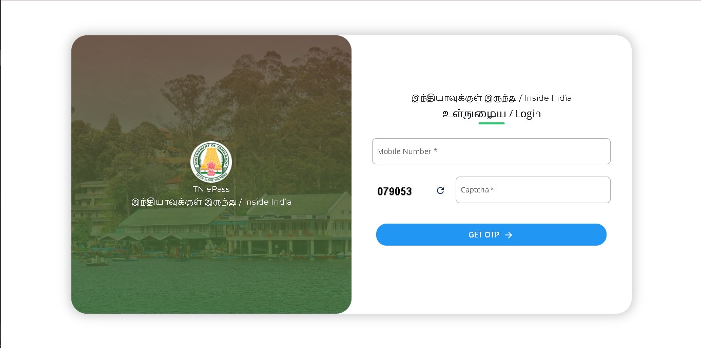

🌿 Dindigul District · Tamil Nadu · Madras High Court Mandate
A researched, step-by-step guide to the mandatory TN e-pass and green tax process — what each is, how they differ, how to apply, what to pay, and what travellers get wrong at the Batlagundu checkpost.
Introduction
If you're planning to drive to Kodaikanal, you now need to sort out two separate things before you reach the Batlagundu checkpost: an e-pass (free, applied online at epass.tnega.org) and a green tax payment (cash, collected at the gate). Many travellers confuse these as the same thing — they're not, and skipping either one gets your vehicle turned back.
Here's the context. During peak summer season, over 20,000 vehicles a day were entering Kodaikanal — a mountain town of around 36,000 residents sitting at 2,133 metres. The roads, water systems, and forest edges were taking serious damage. A division bench of the Madras High Court, led by Justices N Sathish Kumar and D Bharatha Chakravarthy, responded by ordering a vehicle cap system. The e-pass portal went live on 7 May 2024. From 1 April 2025, hard daily limits kicked in: 4,000 vehicles on weekdays, 6,000 on weekends.
The green tax is older — it predates the e-pass by years. It's a municipal conservation levy collected physically at the Batlagundu entry checkpost by local officials. It goes toward road upkeep, waste management, and sanitation in the hill zone. There's no online payment for it — you pay cash when you arrive.
Anyone driving to Kodaikanal in their own or rented vehicle — car, SUV, bike, cab, or tourist van — from any state. If you're on a TNSTC or KSRTC government bus, you don't need a personal e-pass; the operator handles it. Everyone else does. This guide covers the process from Bangalore, Chennai, Coimbatore, and Madurai approaches, all of which converge at Batlagundu.
Apply at least 2–3 days before travel, and a week ahead for any weekend or long-weekend date in April–June. The daily cap fills on a first-come-first-served basis. Based on traveller reports from the 2025 April–June season, popular weekend quotas were getting exhausted by midnight the previous night. There's no special counter or exception lane at the checkpost for vehicles without a pass — you simply don't enter.
Quick Summary
| Requirement | Details |
|---|---|
| Green Tax Required? | Yes. Cash payment at Batlagundu checkpost on arrival. Separate from e-pass. Long-standing municipal levy. |
| E-Pass Required? | Yes. Mandatory for all tourist vehicles since 7 May 2024. Madras High Court order. Free, online only. |
| Who Must Register? | All non-resident vehicles. Local residents use a separate Localite Pass on the same portal. |
| Application Method | Online only — epass.tnega.org. Free. Instant QR code issued. |
| Documents Needed | Mobile number (OTP), vehicle registration number, travel dates, accommodation details. |
| Processing Time | Instant — auto-issued on submission if daily quota is available. |
| Daily Vehicle Cap (Kodaikanal) | 4,000 on weekdays · 6,000 on weekends. EVs given priority. Cap enforced April–June 2025 (may continue). |
| E-Pass Fee | Free. Any website charging a fee for an e-pass is unofficial. |
| Green Tax Payment | Cash at Batlagundu. FASTag accepted only at Kallar boom barrier. UPI generally not accepted. |
| Overstay Penalty | ₹5,000 fine. Vehicle may be blacklisted from future e-pass applications. Exit dates are checked. |
Source: epass.tnega.org, dindigul.nic.in, TripAdvisor Kodaikanal Forum (2025)

What Is It?
The green tax is a local entry conservation fee collected by the Kodaikanal Municipality at the Batlagundu checkpost. It's been in place for many years — well before the e-pass existed. The money is supposed to go toward road maintenance, drainage, waste collection, and general environmental upkeep in the hill area, which bears disproportionate wear from tourist vehicles.
All tourist vehicles — regardless of state of registration — pay the green tax at the checkpost. Private cars, SUVs, motorcycles, rental cabs, tourist vans, private buses. Local Kodaikanal residents, school buses, government vehicles, ambulances, and essential goods vehicles are generally exempt. Passengers on TNSTC/KSRTC government buses don't pay individually — it's handled at the vehicle level by the operator.
Charged per vehicle, not per passenger:
🏍 Motorcycles / Scooters — lowest rate
🚗 Cars / Hatchbacks / Sedans — standard rate
🚙 SUVs / MUVs — slightly above car rate
🚐 Minivans / Tempo Travellers — mid tier
🚌 Minibuses / Private Coaches — highest rate
⚡ Electric Vehicles — reduced or possibly waived; confirm at checkpost on the day
This confusion trips up first-time visitors constantly. They're not the same thing:
The e-pass = your permission to enter. Online, free, done in advance. Shows as a QR code.
The green tax = a cash fee you pay at the gate. Can't be paid online. No advance option. Always carry cash — most checkpoints don't reliably accept UPI or card.
What Is It?
The TN e-pass is a digital entry permit issued by the Tamil Nadu e-Governance Agency (TNEGA) through epass.tnega.org. It was created specifically to enforce the vehicle caps ordered by the Madras High Court for Kodaikanal and the Nilgiris. The system logs each vehicle, its registration, travel dates, and accommodation details — creating a real-time record of how many vehicles are in the district on any given day.
Anyone driving to Kodaikanal who doesn't live there:
✅ Out-of-state visitors (Karnataka, Kerala, Andhra Pradesh, Maharashtra, etc.)
✅ Tamil Nadu residents outside Kodaikanal / Dindigul district
✅ Self-drive rental car users
✅ Cab and tourist vehicle drivers and passengers
✅ Motorcyclists and scooter riders
❌ Kodaikanal local residents → use the Localite Pass option on the portal
❌ TNSTC/KSRTC government bus passengers → operator handles it
❌ Ambulances, essential services, goods vehicles
The pass is valid only for the entry and exit dates you declare during registration. Overstaying beyond your declared exit date carries a ₹5,000 penalty. There are documented cases from the 2025 season of vehicles being fined and their registration blacklisted from future e-pass approvals. Exit checks are conducted — don't assume they're lax.
Same portal, but separate applications. Ooty falls under Nilgiris district, Kodaikanal under Dindigul district — different administrative caps and different destination options on the portal. If you plan to visit both, you need two passes. Nilgiris allows 6,000 weekday / 8,000 weekend. Kodaikanal allows 4,000 weekday / 6,000 weekend. Don't select the wrong destination on the form.
Source: epass.tnega.org · Outlook Traveller (Apr 2025) · TripAdvisor Forum (2025)
No vehicle type is exempt. Bikes, rental cars, cabs — all need a pass.
Any privately owned car driven by a non-resident — hatchback, sedan, SUV — needs an e-pass. One pass per vehicle; all passengers inside are covered. The driver's mobile number is used for OTP and stays linked to the pass. Apply using your car's number plate exactly as it appears on the RC.
Self-drive rentals: apply using the rental vehicle's registration number. You'll need this from the rental company — get it before you apply, not when you're already on the highway. For Ola/Uber/local cabs: the driver is responsible for the e-pass, but confirm this with them explicitly before booking. A common complaint in traveller forums is passengers showing up at Batlagundu to find their driver never applied.
Two-wheelers are not exempt — every tourist motorcycle or scooter needs its own e-pass. Apply individually with your bike's registration number. Bikers also pay green tax at the checkpost (lowest rate tier). Show the QR code from your phone at the entry gate. Download it offline before leaving home — ghat road signal is poor.
Tempo travellers, minibuses, and chartered coaches all need individual e-passes per vehicle. Tour operators handling group trips should apply several days in advance — their vehicles are also counted against the daily cap. Each vehicle in a convoy needs its own pass; one pass doesn't cover multiple vehicles.
The Madras High Court order and Tamil Nadu government announcements both state that EVs receive priority for e-pass issuance. The practical meaning: when the daily quota is nearly full, EV applications may still be approved while petrol/diesel vehicles are turned away. Select the EV category during application. Whether the green tax is reduced or waived for EVs at the checkpost is less clearly documented — the Ooty-focused OotyMade forum notes "EV exemption may apply; confirm at checkpost." Don't arrive assuming the fee is waived; carry cash as a backup.
Documents Required
The portal takes under 2 minutes to complete if you have everything ready. The one thing that catches people out most is the vehicle registration number — get it from the RC book, not from memory.
Official portal only: epass.tnega.org — free, instant, no middleman needed.
Go directly to epass.tnega.org. This is the Tamil Nadu e-Governance Agency's portal. On the homepage, choose whether you're travelling from within India or outside India (foreign nationals).
Enter your 10-digit mobile number (no country code for Indian numbers). Complete the CAPTCHA. Click "Get OTP." A 4-digit OTP arrives by SMS within 30–60 seconds. Enter it and click "Login."
Foreign tourists: use email address for OTP.
After login, choose your destination. Select "Kodaikanal" — not "Nilgiris" (Ooty). This is a common mix-up that results in an invalid pass at the Batlagundu checkpost.
Fill in your entry date, exit date, number of passengers, and accommodation details (hotel/resort/homestay name and address in Kodaikanal). All fields are required.
Enter the vehicle registration number exactly as on the number plate. Select vehicle type from the dropdown (car, SUV, bike, bus, etc.). If you drive an electric vehicle, select the EV category for priority queue.
Double-check the registration number before hitting next. The field accepts formats with and without spaces, but the actual number must match exactly. You cannot edit after submission.
On the confirmation screen, verify:
• Vehicle registration number (no typos or transposed digits)
• Entry and exit dates
• Accommodation address in Kodaikanal
Accept the terms and conditions checkbox. Click "Submit." Processing is instant — no manual review queue.
Your e-pass generates immediately as a QR code. Download the PDF and/or screenshot the QR code to your phone gallery right now — before you travel.
This is not optional. Mobile signal at the Batlagundu checkpost and on the ghat road is unreliable. Travellers who relied on loading the portal in real-time at the gate have reported delays and access failures. The QR needs to be visible offline.
You can also retrieve past passes from the "Previous Passes" section of the portal using your mobile number — useful as a backup if you lose the download.
Step-by-step process based on: epass.tnega.org · TN E-Pass step-by-step (Mar 2025) · OotyMade E-Pass Guide
Payment Process
No. As of the latest available information (June 2025), the Kodaikanal green tax has no online payment option. It's not part of the e-pass application and there's no payment gateway for it on any government portal. If that changes, it will be updated on the Dindigul District website or the TNEGA portal. Don't pay any third-party site claiming to collect green tax online in advance — that's not a real service.
Green tax is collected in cash at the Batlagundu entry checkpost — the main entry point from the NH 44 / Dindigul side, which is the standard approach from Bangalore, Chennai, and Madurai. Municipal officials stationed here collect the fee from each vehicle before it proceeds up the ghat.
FASTag: Accepted specifically at the Kallar boom barrier. Not universally available across all checkpoints. System reliability at remote hill checkposts can be inconsistent. The OotyMade guide (which covers both Ooty and Kodaikanal entry) explicitly states: "Always carry cash for the green tax. There is no UPI or card option at most checkposts."
Source: OotyMade E-Pass Guide (cash-only note) · Dindigul District Administration inspection notice
Charges
| Vehicle Type | Green Tax (Reported, Approx.) | Notes |
|---|---|---|
| 🏍 Motorcycle / Scooter | ₹30 – ₹50 | Per two-wheeler, per entry |
| 🚗 Car / Hatchback / Sedan | ₹50 – ₹100 | Per vehicle, covers all passengers |
| 🚙 SUV / MUV / Jeep | ₹100 – ₹150 | Slightly above car rate |
| 🚐 Minivan / Tempo Traveller | ₹150 – ₹250 | 8–12 seater tourist vans |
| 🚌 Minibus / Private Bus | ₹300 – ₹500+ | Larger vehicles; higher rate |
| ⚡ Electric Vehicles | Reduced / Possibly Waived | Confirm at checkpost on arrival |
Figures based on traveller-reported rates. No official published rate card found as of June 2025. Always verify at checkpost.
Common Mistakes
These aren't hypothetical. These are the issues that come up repeatedly in TripAdvisor threads, Reddit posts, and traveller forums from the 2024–2025 Kodaikanal season. Read these before you apply.
Patterns compiled from: TripAdvisor Kodaikanal Forum 2025 · OotyMade E-Pass FAQ · Reddit r/Chennai and r/TamilNadu threads (2024–2025)
Travel Checklist
Keep all of this accessible — not in the boot or a zipped bag — before you reach Batlagundu.
Saved to your phone gallery as a screenshot or PDF. Not a browser tab. Show the QR for scanning at the gate. Backup retrieval: "Previous Passes" on epass.tnega.org using your mobile number.
Carry the original. DigiLocker is generally accepted in Tamil Nadu but physical avoids any dispute. International visitors: carry an International Driving Permit alongside your home country license.
Original RC of the vehicle. For rentals: carry the rental agreement alongside the RC copy the rental company provides. The number plate must match the RC — which must match the e-pass.
Small denominations (₹50 and ₹100 notes). Exact amount depends on vehicle type. FASTag only at Kallar barrier. UPI is not reliably accepted. Don't arrive at the gate without cash for this.
Screenshot or printout of your hotel/resort/homestay booking. You entered this address during e-pass registration — carry the proof in case officials ask to verify the declared accommodation.
FAQ
Final Notes
The Kodaikanal e-pass and green tax aren't bureaucratic hurdles invented to inconvenience tourists. A mountain town of 36,000 people was absorbing 20,000 vehicles a day during peak season. The roads, water systems, and forest edges were suffering visibly. These measures exist because the alternative — unrestricted access — was quietly breaking the place you're going to visit.
The process is genuinely simple: apply at epass.tnega.org a few days before travel, download the QR offline, and bring ₹200–₹500 in small cash for the green tax at Batlagundu. That's it. The mistakes that cause real problems — wrong vehicle number, no offline QR, no cash, applying too late — are all avoidable with 10 minutes of preparation the night before you leave.
Back to Quick Summary ↑